VERIFYING MAC ADDRESSES OF CISCO IOS SWITCHES
Objective: This lab is to explore the MAC address table on Cisco IOS switches and routing table on cisco IOS routers.
Below is the topology for my lab demonstration.
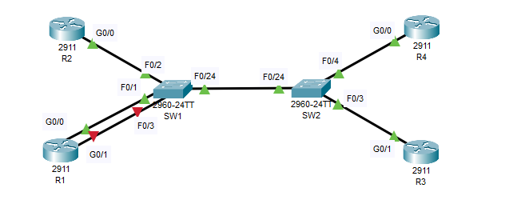
From this topology I had to login and check which interface has been configured on 10.10.10.10/24 by using the "show ip interface brief" command.
These are the results of my ip configurration check below.The ranges for this check was from Router1 (R1) to Router4(R4).
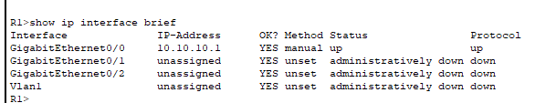
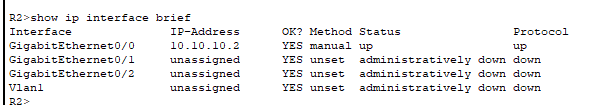
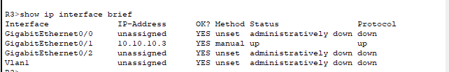
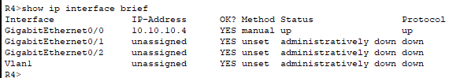
Now I know the NIC running the protocol, I can find the MAC Addresses of each routers.
Using the command "show interface gigabitethernet 0/0"
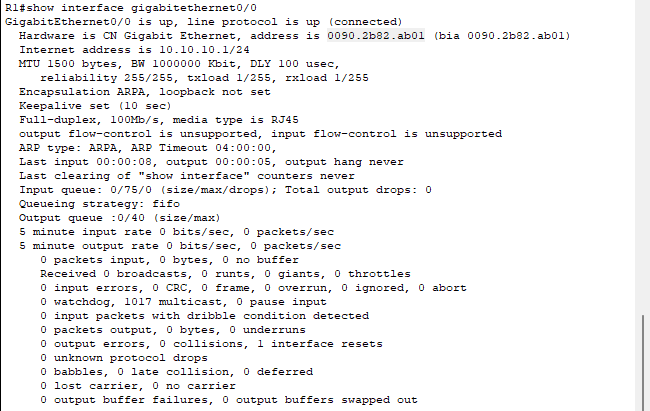
The MAC address is also known as the physical address. From the screenshot the Hardware is CN Gigabit Ethernet, and the address is0090.2b82.ab01
Physical/Hardware address = MAC address.
Below are the screenshots for the MAC addresses for R2, and R4.
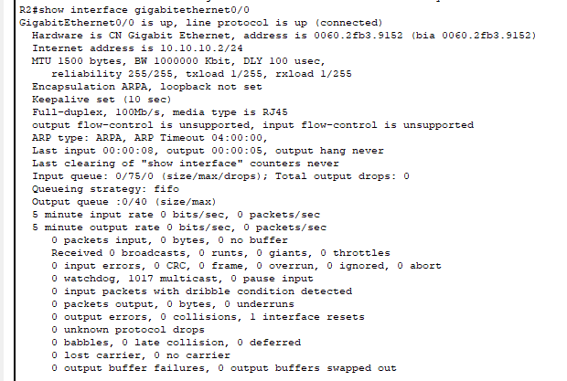
R2 MAC address is 0060.2fb3.9152 looking at the output of our command.
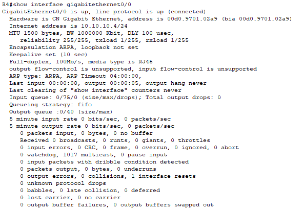
Above is the screenshot for router R4. The MAC address of R4 = 00d0.9701.02a9
R3 approach is quite different from the rest due to the NIC. In R3's case it's using the gigaethernet0/1 which is different from the others
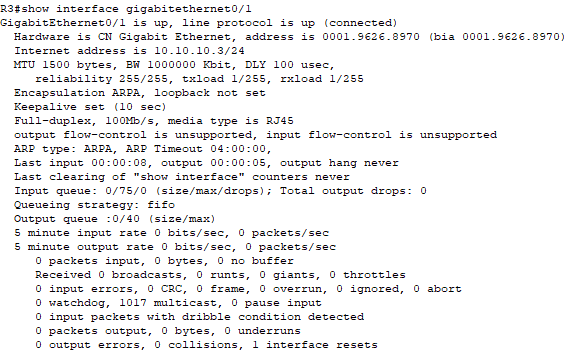
From the screenshot above, the command was runned against a different NIC in order to find the MAC address which is gigabitetherne0/1.
So looking at the screenshot the MAC address = 0001.9626.8970
VIEWING DYNAMICALLY LEARNED MAC ADDRESS ON SWITCHES
Objective: We will be verifying the router's MAC addresses are reachable via the expected ports in the topology below.

To begin with we will test for SW1 but first of all let me explain dynamically learned MAC address. A dynamically learned MAC address is an address that a switch learns when a device connects to the network for the first time.
The command to view this is " show mac address-table dynamic". Below is the use of this command to display the dynamic mac address-table.
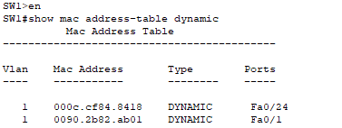
So looking at the table above we can tell the MAC addresses of the routers connected to SW1 and the ports in which they are connected to, which are Fa0/24 and Fa0/1 respectively.
If you wish to clear this table you can use the command "clear mac address-table dynamic"
Let us repeat for SW2 as well.
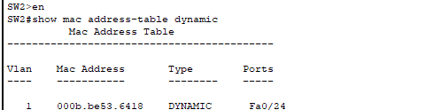
NOTE: Devices ina real world network tend to be more chatty and send traffic more frequently, which causes the MAC address table to stay updated. The Switch will periodically flush old entries.